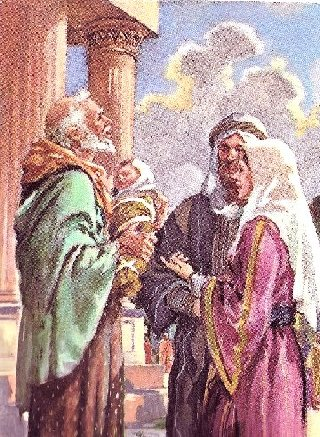
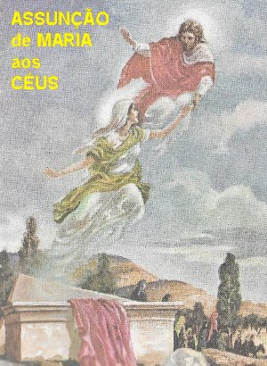
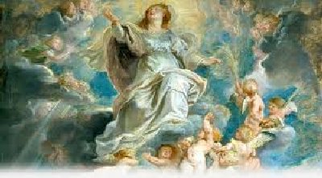
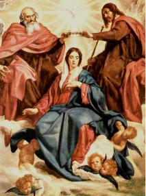

"AS ALEGRIAS
DA MÃE"
6 – SEXTA ALEGRIA -
“A FESTA DA PURIFICAÇÃO DE MARIA”:
No inicio do Cristianismo a “Festa da Purificação de NOSSA SENHORA” era celebrada mais como uma “Festividade de NOSSO SENHOR”. Todavia, na mencionada Lista Gelasiana a festividade é encontrada pela primeira vez com o nome de “PURIFICAÇÃO DA BEM-AVENTURADA VIRGEM MARIA”. No Oriente a Festa tinha o nome de “Encontro do SENHOR com Simeão”. Por ocasião de uma terrível epidemia de peste no ano 542, o Imperador Bizantino Justiniano I, elevou a “Festa da Purificação de NOSSA SENHORA”, a categoria de feriado nacional em todo o Império. No ano 560 Roma também já Festejava, mas não oficialmente. O evento foi oficializado pelo Papa Sérgio I (687-701), e no primeiro dia da comemoração, o Papa prescreveu que fosse realizada uma grande procissão, que também se repetiu em todas as festividades de NOSSA SENHORA.
6.1 – Os dizeres do Livro Levítico:
A Lei em Israel naquela época tinha dois preceitos relativos ao nascimento dos filhos primogênitos, ou seja, do nascimento do primeiro filho homem do casal. O primeiro preceito prescrevia que a mãe se mantivesse em casa durante quarenta dias, e findo os quais, devia ir ao Templo para se purificar (Lv 12, 1-8). O segundo preceito prescrevia que os pais do menino o levassem ao Templo e ali o oferecessem a DEUS. Aos dois preceitos a SANTÍSSIMA VIRGEM MARIA quis obedecer neste dia. Embora não estivesse sujeita a Lei da Purificação, e nem de obedecer aos dois mencionados preceitos, como Virgem e Pura que ELA era e permaneceu. Entretanto, por amor a obediência, quis ir se purificar, como as outras mães, e também, obedecendo ao segundo preceito de apresentar e oferecer o Seu FILHO ao PAI ETERNO.
6.2 – MARIA com JOSÉ no Templo:

6.3 – O Sofrimento de MARIA e o SEU consentimento.
E assim, num dia de tantas alegrias, e do seu imenso prazer em apresentar o SEU FILHO ao DEUS ALTÍSSIMO e TODO-PODEROSO, MARIA ouviu também aquelas palavras tristes de Simeão. Ao mesmo tempo em que compreendeu a grandeza da Missão do SEU DIVINO FILHO, pelos SEUS cuidados de MÃE lembrou-se das Sagradas Escrituras e percebeu o desfecho doloroso da Missão Redentora de JESUS. Então, num gesto simples e humilde, da MÃE consciente e responsável, que quer o bem e a salvação para todos, agasalhou no âmago do seu coração o SEU consentimento Materno, mergulhado numa inconsolável dor e numa imensidão de lágrimas.
6.4 – Efeitos do Sacrifício de MARIA.
Pelos merecimentos de SUAS dores e da oferta na Cruz do SEU FILHO, MARIA se tornou a MÃE de todos os redimidos. MÃE que também nos foi dada pelo SEU próprio FILHO JESUS nos últimos momentos de vida na Cruz, confirmando por SUAS Palavras no derradeiro Testamento, o que o admirável e exuberante sentimento maternal de MARIA, já havia alcançado pelo SEU consentimento espiritual a perfeita e completa realização da Obra Redentora do SEU QUERIDO E AMADO FILHO JESUS.
7 – SÉTIMA ALEGRIA -
“ASSUNÇÃO DE MARIA AOS CÉUS”:

É a Festa mais antiga de “NOSSA SENHORA”, pois desde o ano 430 ela já era comemorada no Oriente, no Império Bizantino. No Ocidente, São Gregório de Tours na França (falecido em 573), foi o primeiro que falou na referida Festa da SANTÍSSIMA VIRGEM MARIA, ou seja, da Assunção Corporal de MARIA aos Céus. Em Roma, o Papa Sérgio I (687-701), ordenou que se fizesse uma bonita procissão no dia da Festa. No século X, surgiram as primeiras opiniões contrárias, com escritores se intitulando “de receosos em acolher aquele privilégio de MARIA”, e recomendavam aos cristãos que tivessem cautela no assunto. Todavia, os verdadeiros e competentes teólogos fizeram prevalecer à razão e o direito, fazendo cessar a onda de “receios”. No dia 1º de Novembro de 1950, ANO SANTO, o Sumo Pontífice, Papa Pio XII definiu esta verdade como Dogma de Fé. O Dogma é uma verdade revelada por DEUS, e como tal, proposta pela Igreja para crença dos fiéis. O Dogma da ASSUNÇÃO DE MARIA AOS CÉUS vem dentro da Constituição Apostólica “Munificentissimus DEUS”, e o texto afirma: “Pronunciamos, declaramos e definimos ser dogma Divinamente revelado que a IMACULADA MÃE DE DEUS sempre VIRGEM MARIA, terminado o curso da vida terrestre, foi Assunta em Corpo e Alma à glória celestial”.
7.1 – Feliz trânsito desta Terra para o Céu:
Teologicamente está demonstrada que a “morte” é uma consequência do “pecado”. Ora, sendo MARIA totalmente Santa e isenta de qualquer mancha de pecado por menor que fosse evidentemente não devia estar sujeita a padecer a “morte corporal” como toda a humanidade, pois todas as gerações são atingidas pelo veneno do pecado. Todavia, DEUS CRIADOR querendo que MARIA “fosse bem semelhante” a JESUS, convinha que morresse a MÃE como tinha morrido também o FILHO. Quis o SENHOR DEUS CRIADOR dar aos “justos um exemplo da morte preciosa que lhes está reservada” e por isso, determinou que morresse a VIRGEM SANTÍSSIMA, mas de uma morte suave e feliz.
Três coisas costumam tornar a morte amarga e sofredora: “o apego aos bens e as pessoas”,“o remorso pelos pecados cometidos” e a “incerteza da salvação”. Todavia, a Morte de MARIA foi totalmente diferente, completamente isenta dessas “amarguras e expectativas”. Ao contrário, a SANTÍSSIMA VIRGEM MARIA estava acompanhada de três preciosas e belíssimas graças, que tornaram a SUA Morte extremamente agradável e envolvida de plena felicidade. ELA morreu como sempre viveu: “completamente desapegada aos bens mundanos, com uma imensa paz na consciência e no coração, e com a certeza absoluta de alcançar a glória eterna”.
7.2 – Particularidades da Morte de MARIA:

Alguns escritores antigos como Nicéfaro e Cedreno, comentavam nos meios cristãos, que numa Aparição Angélica ocorrida na Igreja em Jerusalém, foi confirmada a notícia de que alguns dias antes da morte de MARIA, o SENHOR LHE enviou o Arcanjo São Gabriel que LHE disse: “DEUS já ouviu os VOSSOS Santos desejos e me mandou VOS dizer, que deveis VOS preparar para deixar a Terra, porque ELE VOS quer no Paraíso. Vinde, pois, tomar posse do VOSSO Reino, porquanto eu e toda a corte celeste VOS esperamos e desejamos.” Diante desse carinhoso e agradável comunicado, MARIA respondeu: “Eis aqui a escrava do SENHOR; cumpra-se em MIM a Vontade do MEU DEUS.” Posteriormente ELA levou o fato ao conhecimento do Apóstolo João, que comunicou aos demais Apóstolos e Membros da Administração da Igreja nascente. MARIA permaneceu na sua pobre casa em Jerusalém, preparando-se para a morte. Durante o tempo de espera, os Anjos vinham visitá-la com frequência e com alegria comemoravam com ELA o SEU breve translado ao Céu.
7.3 – A Presença dos Apóstolos na despedida:
Diversos autores importantes como André de Creta, João Damasceno e outros, bem informados a respeito dos fatos ocorridos no Tempo dos Apóstolos, referem que os Discípulos do SENHOR que estavam dispersos em variadas regiões, reuniram-se na casa de MARIA antes da SUA morte. ELA vendo-os reunidos na SUA presença, disse: “Pelo amor de VÓS, e para VOS ajudar no trabalho da Igreja, MEU FILHO ME deixou na Terra. Agora que o fruto da Santa Semente da Fé se acha espalhado, em Divino crescimento, MEU SENHOR determinou que não sendo mais necessária a MINHA presença aqui, e compadecendo-se da imensa saudade que sinto DELE, quer que EU vá para o Céu. Ficai, pois, Vós a trabalhar pela glória de DEUS. Se vos deixo, não vos deixo com o coração; COMIGO levarei a presença de todos, e permanecerá sempre o grande amor que vos tenho.”
Quando eles perceberam ter chegado o momento DELA partir deste mundo, puseram-se de joelhos ao redor do SEU leito. Uns beijavam os SEUS Santos Pés, outros LHE pediam a bênção, e choravam copiosamente com o coração transpassado de dor, porque tinham de se separar para sempre, nesta vida, da amada SENHORA MÃE DO SENHOR. Descreve os historiadores, que no momento decisivo, Santa Isabel de Schoenau viu JESUS aparecer com a Cruz na MÃO, à SUA MÃE agonizante. MARIA fechou os olhos e morreu. Pouco tempo depois da morte, ouviu-se no quarto uma celeste harmonia e um grande esplendor que iluminou todo o recinto. JESUS segurou a MÃO de SUA MÃE que abriu os olhos e sorrindo, viu JESUS e uma multidão de Anjos, que cantando com muita alegria, os acompanharam ao Céu.
8 – OITAVA ALEGRIA - “FESTA DA ASSUNÇÃO DE MARIA AOS CÉUS”
Nas celebrações em homenagem a MARIA, NOSSA SENHORA, pelo SEU triunfo e glorificação no Céu, a Igreja jubilosamente nos convida a participar das homenagens com as palavras: “Alegremo-nos no SENHOR, agora que celebramos o dia festivo da SANTÍSSIMA VIRGEM MARIA! MARIA foi coroada Rainha do Céu. E não deveríamos celebrar festivamente esse dia, se em verdade a amamos? Sim, verdadeiramente devemos nos alegrar, e todos nós, comemorarmos jubilosamente e de todo o coração.”
8.1 – JESUS pessoalmente glorifica a entrada de SUA MÃE no Céu.
Para VOS conduzir ao Céu, ó MÃE
DE DEUS querida, não foi suficiente um grupo de Anjos, alegres, entoando 
9 – NONA ALEGRIA - “COROAÇÃO DE NOSSA SENHORA NO CÉU”:

A admiração ocupou a mente dos bem-aventurados no Paraíso Divino. Imediatamente, todos os espíritos celestes em grande louvor cantaram hinos saudando MARIA. E unindo àquele lindo coro, vieram os Santos alegres e jubilosos, ao mesmo tempo em que se fez ouvir uma linda música suave e tão harmoniosa que encantou a todos, deixando MARIA emocionada. E caminhando feliz no meio daquela imensa alegria celeste, NOSSA SENHORA chegou diante do trono de DEUS PAI. Amparada por JESUS, ajoelhou respeitosamente e com plena humildade a SANTÍSSIMA VIRGEM adorou a MAJESTADE DIVINA. O CRIADOR feliz com a SUA Obra Prima ordenou que NOSSA SENHORA ocupasse o trono à direita de JESUS, e juntos, a SANTÍSSIMA TRINDADE, colocou uma linda coroa de ouro e pedras preciosas na cabeça de MARIA, declarando ser a SANTÍSSIMA VIRGEM MARIA, Rainha Universal do Céu e da Terra.
ORAÇÃO A NOSSA SENHORA
“Eu VOS saúdo, ó MARIA, VÓS sois a esperança dos cristãos. Recebei a súplica de um pecador que VOS ama ternamente, VOS honra de um modo particular, e em VÓS põe toda a esperança de salvação. De VÓS recebi a vida, pois me restabeleceste na graça do VOSSO FILHO. VÓS sois o penhor certo de minha salvação. Rogo-VOS, minha MÃE, que me liberteis do peso dos meus pecados; que dissipeis as trevas da minha inteligência; adormecei os afetos terrenos do meu coração; dê-me forças para resistir às provocações dos meus inimigos e as tentações do mundo; e governais de tal modo a minha vida, que eu possa, por VOSSO intermédio e com a VOSSA proteção, chegar a felicidade eterna no Paraíso DE DEUS”.
(Escrita por São João Damasceno)